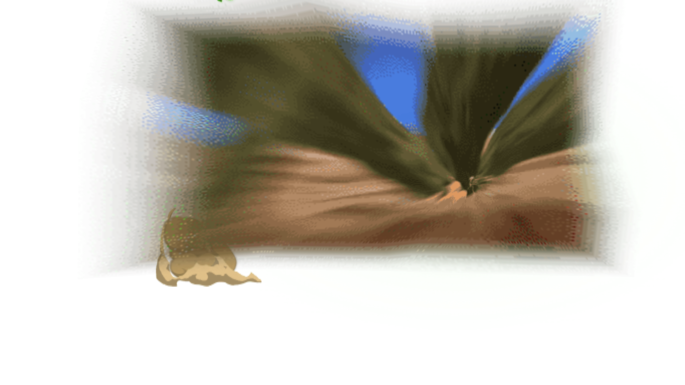
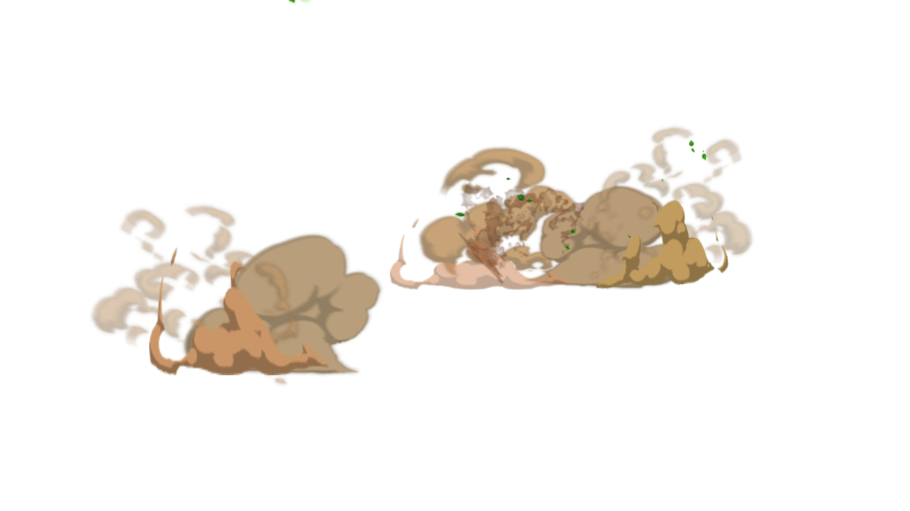
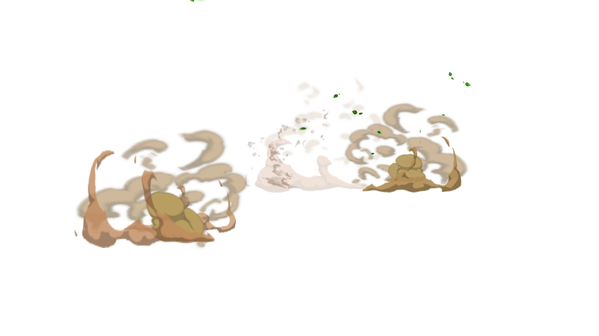

B02 / 064 · 连续动作抽帧
1 / 1557 / 15513 / 15519 / 15525 / 15531 / 15537 / 15543 / 15549 / 15555 / 15561 / 15567 / 15573 / 15579 / 15585 / 15591 / 15597 / 155103 / 155109 / 155 115 / 155
115 / 155 121 / 155
121 / 155
127 / 155133 / 155
139 / 155
145 / 155151 / 155